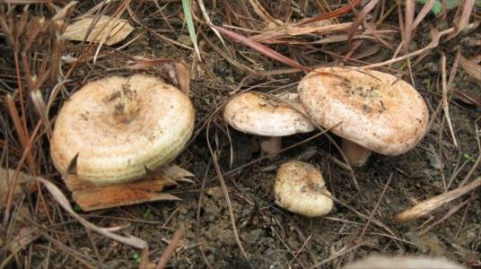

冬虫夏草
珍贵的滋补药材，具有补肾益肺、强身抗疲劳的功效。

银耳
滋阴润肺，常用于治疗肺燥咳嗽。
猴头菇
具有健脾养胃、安神的功效。
金针菇
营养丰富，有助于增强机体抵抗力。
香菇
具有抗癌、增强免疫力的作用。
黑木耳
活血化瘀，常用于预防心血管疾病。
竹荪
清热解暑，具有调节胃肠功能的作用。
松口蘑
味道鲜美，具有一定的药用价值。


马勃
止血消炎，外用可治疗创伤出血。
雷丸
具有驱虫作用，但需在专业指导下使用。
麦角菌
含有生物活性成分，但需注意其潜在的副作用。
红曲
具有降血脂作用，但需注意剂量和使用方法。
薄树芝
具有抗炎和免疫调节作用。
紫芝
与灵芝类似，具有滋补强壮的效果。
云芝
具有抗癌和免疫调节作用。
树舌
具有抗肿瘤潜力，但需进一步研究。
松乳菇
具有滋补作用，但需注意其药用特性。
羊肚菌
味道鲜美，具有一定的药用价值。
草菇
具有清热解暑、增强免疫力的作用。
平菇
营养丰富，有助于提高机体抵抗力。

鸡腿菇
具有健脾养胃、增强免疫力的功效。
姬松茸
具有抗疲劳和增强免疫力的作用。
大球盖菇
具有滋补强壮和增强免疫力的作用。

茶树菇
具有健脾养胃、增强免疫力的作用。
真姬菇
具有滋补强壮和抗氧化的作用。
长根菇
具有抗肿瘤潜力，但需进一步研究。
虎皮香菇
具有滋补作用，但需注意其药用特性。
蟹味菇
具有增强免疫力和抗氧化的作用。
花脸菇
具有滋补作用，但需注意其药用特性。
金顶侧耳
具有抗氧化作用，但需注意其药用特性。
榆黄蘑
具有滋补作用，但需注意其药用特性。
珍珠菇
具有滋补强壮和抗氧化的作用。
猪肚菇
具有健脾养胃、增强免疫力的功效。
杏仁水
虽非菌类，但具有润肺止咳的功效。
榛蘑
具有滋补作用，但需注意其药用特性。